MŪSŲ ŽMONĖS
Mūsų mokytojų komanda
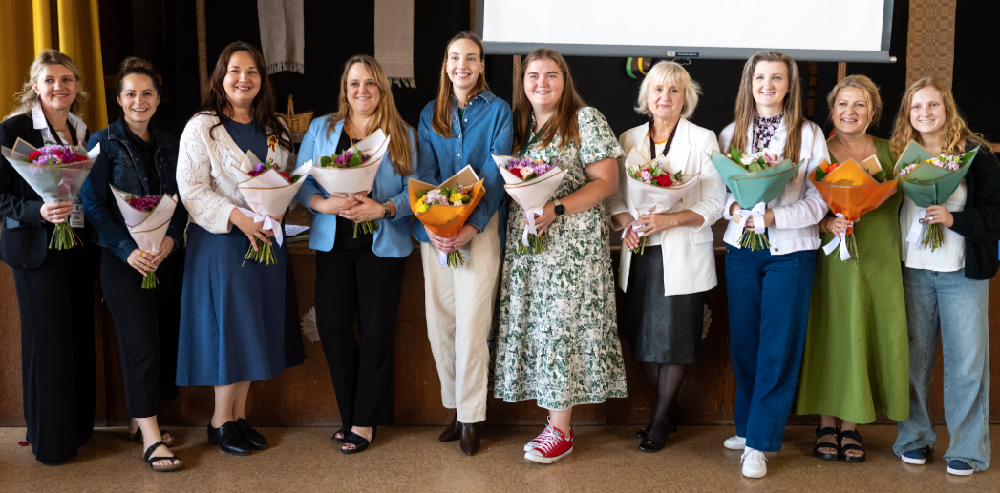
Mūsų mokytojai ir savanoriai kuria jaukią erdvę kalbai, kūrybai, žaidimui ir kiekvieno vaiko pasitikėjimui. Spauskite mokytojo kortelę ir susipažinkite artimiau.
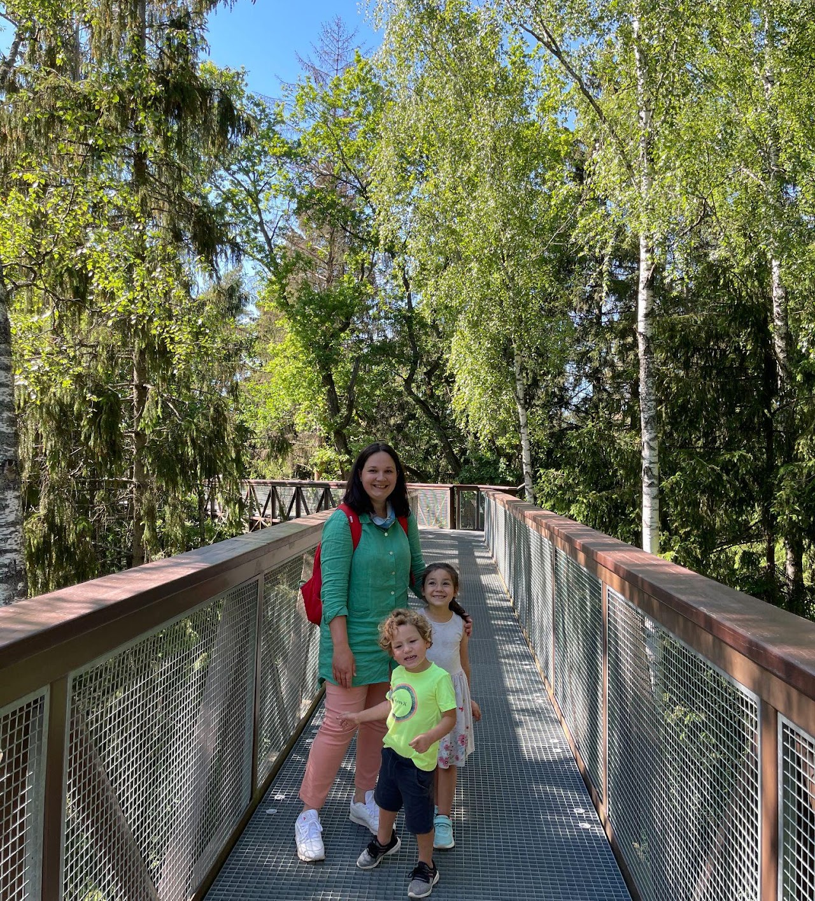
AgnėMontessori ir ankstyvasis ugdymasGimė ir augo Kaišiadoryse, po studijų Vilniuje 2012 m. su vyru atvyko į JAV. Dukrai 2018 m. pradėjus lankyti „Genį“, Agnė baigė Montessori 3–6 metų vaikų lavinimo programą.
Skaityti visą biografiją →→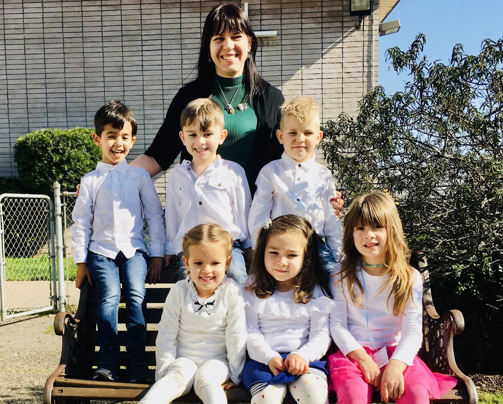
ErikaLietuvių kalbos mokytojaUžaugo Vilkijoje netoli Kauno, 2001 m. atvyko į JAV. Prie „Genio“ mokytojų kolektyvo prisijungė 2019 m. ir džiaugiasi galėdama mokyti vaikus lietuvių kalbos bei supažindinti su kultūra ir tradicijomis.
Skaityti visą biografiją →→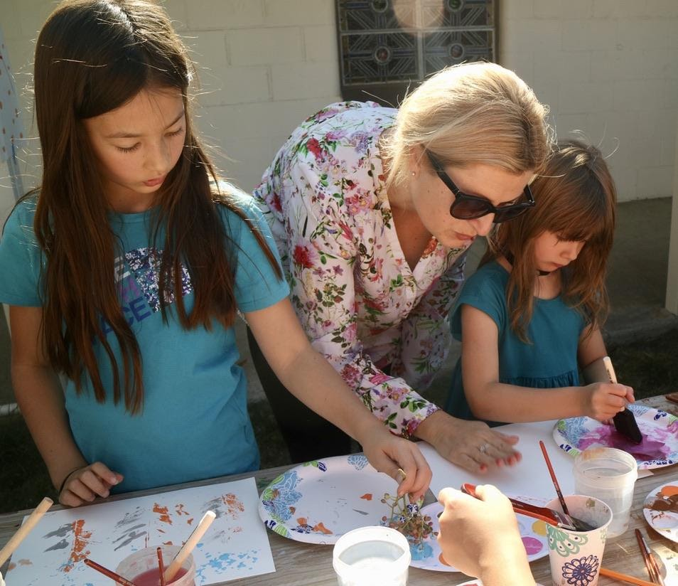
AurelijaLietuvių kalbos mokytojaGimė ir užaugo Vilniuje, 2013 m. su šeima atvyko į Ameriką, o tų pačių metų rugsėjį pradėjo dirbti „Genyje“. Jai svarbu būti lietuvių bendruomenės dalimi ir auginti lietuviškai kalbančią šeimą.
Skaityti visą biografiją →→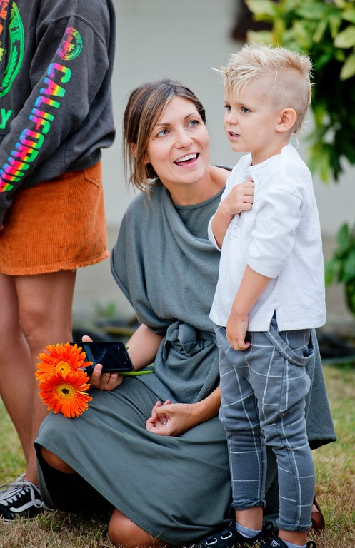
JustėLietuvių kalbos mokytojaGimė ir užaugo Elektrėnuose, į Ameriką atvyko 2012 m. 2019 m., ieškodama būdų puoselėti lietuvybę keturmečiui sūnui, Justė atrado „Genį“ ir sau.
Skaityti visą biografiją →→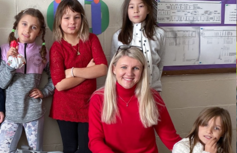
Rita RosickerLietuvių kalbos mokytoja2005 m. iš meilės atvyko į JAV. Prieš ištekėdama pasižadėjo vaikams duoti lietuviškus vardus ir su jais kalbėti lietuviškai. Augindama keturis vaikus suprato, kad nori dalintis patirtimi su „Genio“ mokytojais.
Skaityti visą biografiją →→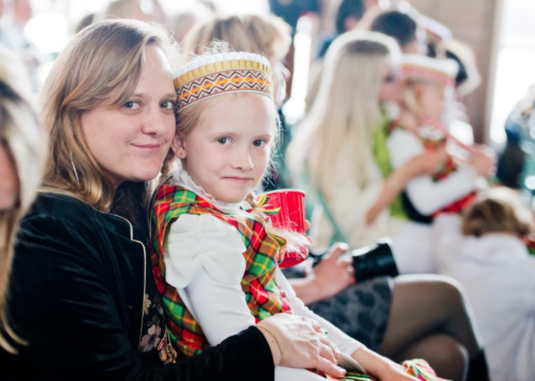
AistėLietuvių kalbos mokytojaGimė ir augo Kaune, 2000 m. atvyko į JAV, studijavo UC Berkeley ir įsikūrė Šiaurinėje Kalifornijoje. Prie „Genio“ prisijungė dukrai suėjus ketveriems; mokydama semiasi lietuviškumo, energijos ir idėjų.
Skaityti visą biografiją →→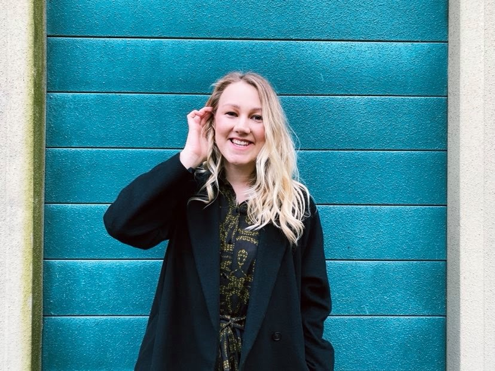
IndrėNuotolinis mokymasGimė ir užaugo Molėtuose, nuo 2012 m. gyvena Vilniuje. 2019 m. po magistro studijų atvyko į San Franciską atlikti praktikos „Genyje“; nuo 2020 m. rudens nuotoliniu būdu bendrauja su 7–8 klasių mokiniais.
Skaityti visą biografiją →→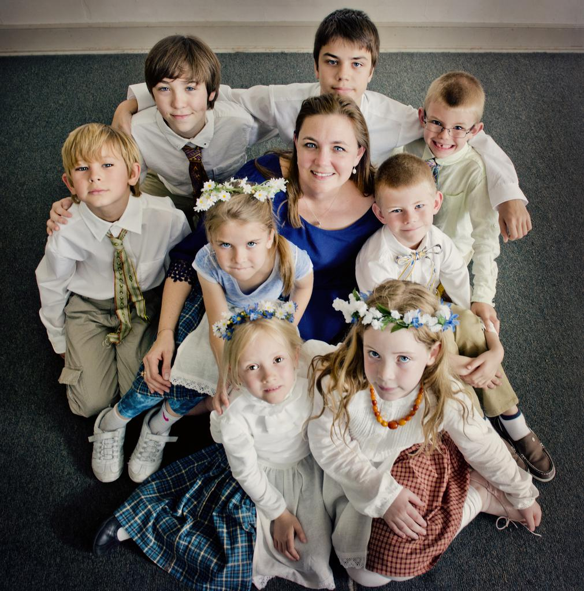
VanesaLietuviški šokiai ir dainavimasGimė Los Andžele aplinkoje, kur tėvai ją vedė į lituanistinę mokyklą, skautus ir lietuviškus renginius. 2009 m. grįžusi į Kaliforniją, Vanesa prisijungė prie „Genio“, kuriame pradžioje mokėsi septyni mokiniai.
Skaityti visą biografiją →→Mokytojų ir mokinių akimirkos
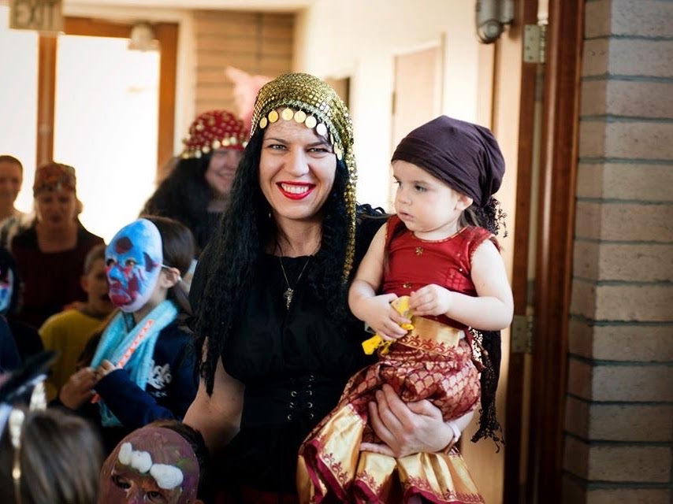
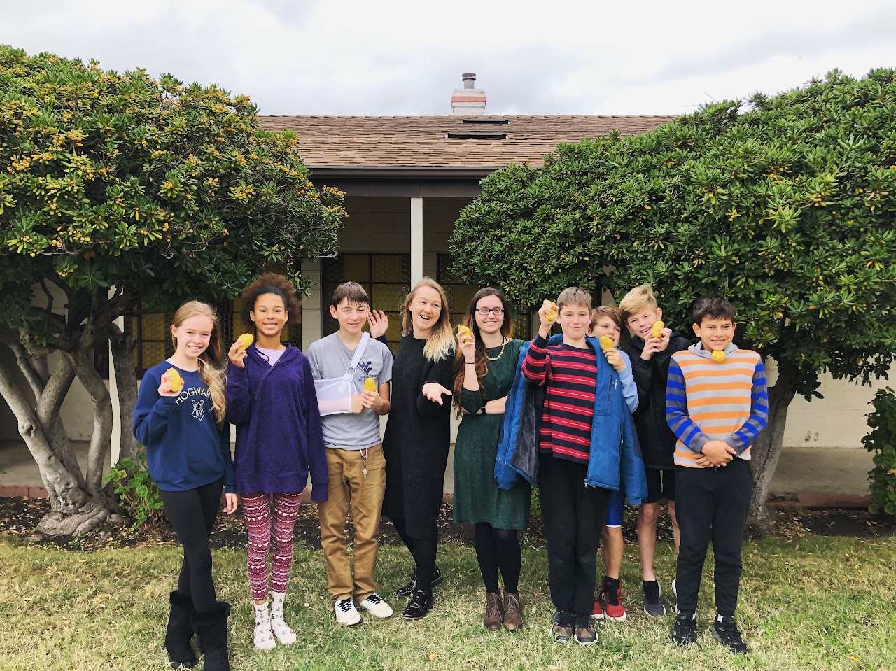
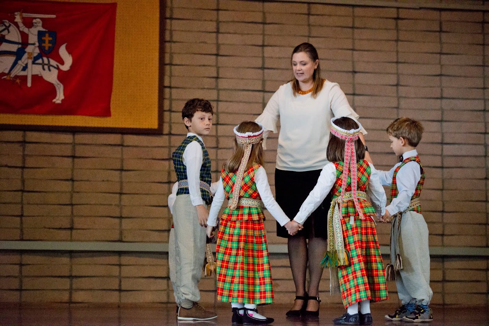